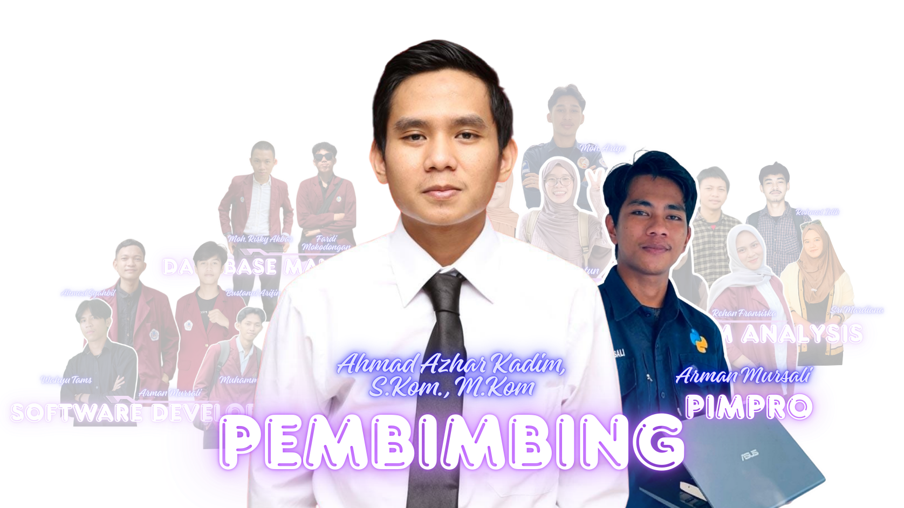
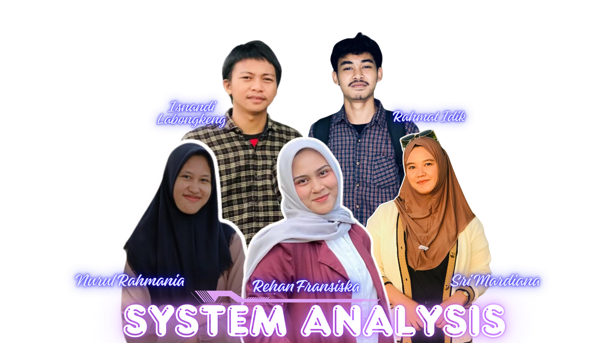
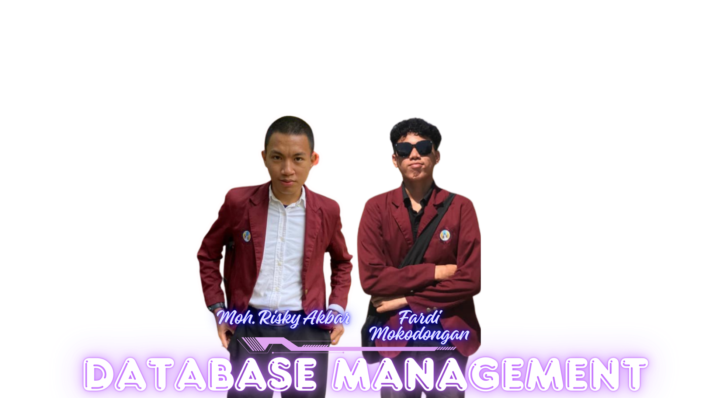
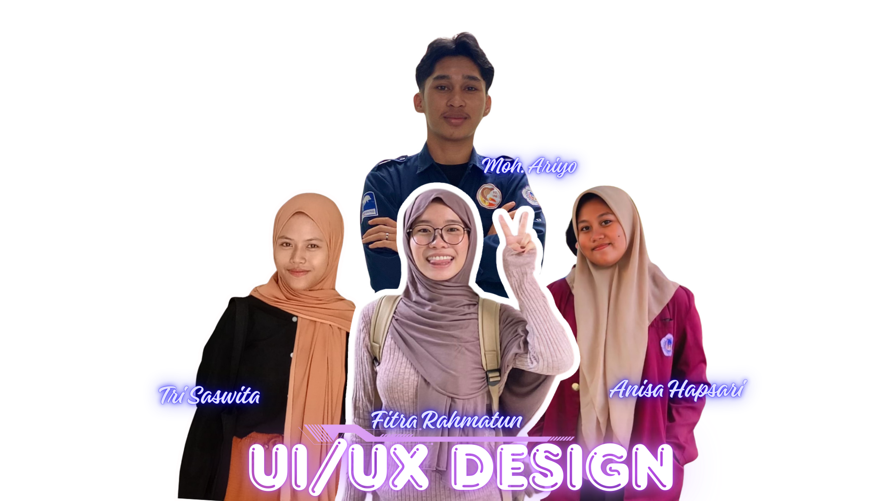
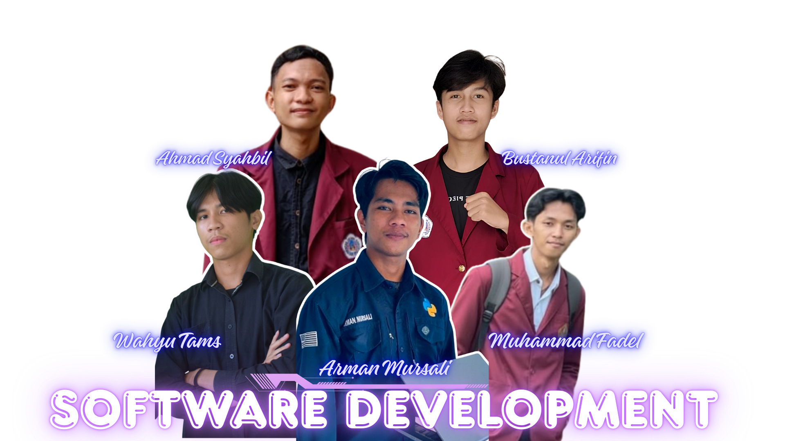

Mahasiswa Informatika yang berkontribusi besar dalam pembuatan Website NeoSISKP Tahun 2025, Jurusan Teknik Informatika, Universitas Negeri Gorontalo.

NIP. 199409052020121012
"Bertanggung jawab Memberikan arahan, masukan, dan evaluasi secara berkelanjutan dalam setiap tahapan pengembangan sistem, mulai dari perencanaan hingga implementasi, agar sistem yang dibangun berjalan sesuai tujuan, kebutuhan pengguna, serta standar yang telah ditetapkan."

Divisi System Analysis bertanggung jawab dalam menganalisis kebutuhan sistem NeoSISKP secara menyeluruh. Divisi ini melakukan penggalian kebutuhan pengguna (mahasiswa, dosen, dan admin), menyusun dokumen kebutuhan sistem, serta merancang alur bisnis dan proses kerja sistem. Hasil analisis menjadi dasar utama bagi divisi lain dalam proses desain, pengembangan, dan implementasi sistem.

Divisi Database Management berfokus pada perancangan, pengelolaan, dan optimasi basis data NeoSISKP. Divisi ini merancang struktur database, relasi antar tabel, serta memastikan keamanan, konsistensi, dan integritas data skripsi dan kerja praktik. Selain itu, divisi ini juga mendukung kebutuhan query dan integrasi data untuk mendukung performa sistem secara optimal.

Divisi UI/UX Design bertanggung jawab dalam merancang tampilan dan pengalaman pengguna NeoSISKP agar mudah digunakan, intuitif, dan efisien. Divisi ini menyusun user flow, wireframe, hingga desain antarmuka menggunakan Figma, dengan mempertimbangkan kebutuhan pengguna dan hasil analisis sistem. Tujuan utama divisi ini adalah menciptakan pengalaman pengguna yang nyaman dan profesional.

Divisi Software Development bertugas mengimplementasikan sistem NeoSISKP berdasarkan hasil analisis dan desain yang telah dibuat. Divisi ini melakukan pengembangan fitur, integrasi sistem, serta pengujian aplikasi agar berjalan sesuai kebutuhan. Selain itu, divisi ini juga memastikan kualitas kode, keamanan sistem, dan kesiapan sistem untuk digunakan secara nyata.